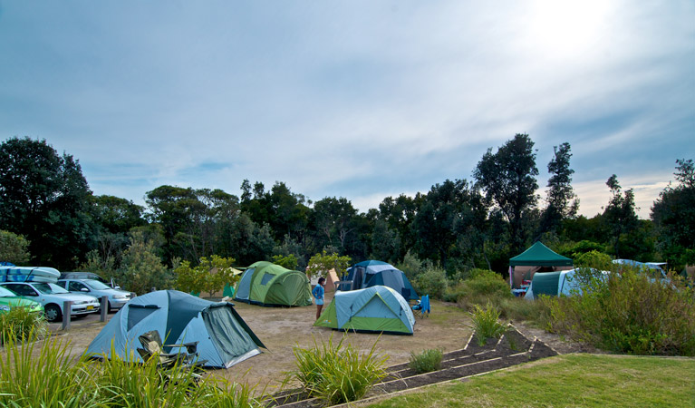

The Park has two hostels, one situated at Sant'Antonio di Mavignola and one in the heart of the Brenta at Valagola near the lkae with the same name. The Park recommends you to use accommodation with the Qualità Parco logo.
Structures with the Qualità Parco logo adopt a number of management rules aimed at saving energy and water, rationalising use of resources and making what they offer more typical.
Participants in this project are aware of the importance of their role and committed to maintaining the landscape intact and constantly attenuating their environmental impact.
Hotels, garnì and campsites await you to help you discover the fascination of unspoilt nature and a unique landscape where you can enjoy your holiday in respect of the local area, making the most of your experience by discovering the environment, history and traditions of one of the most evocative holiday
destinations in the Alps.
Instead, for the most adventurous of you, the park has a big campground, which can guest around 100 tents; we are gonna supply electricity for all your needs, and all
the information you want to know, contact us to save a spot for you!
- Guesthouse of Mavignola
- Guesthouse of Valagola
- Guesthouse Maso Doss